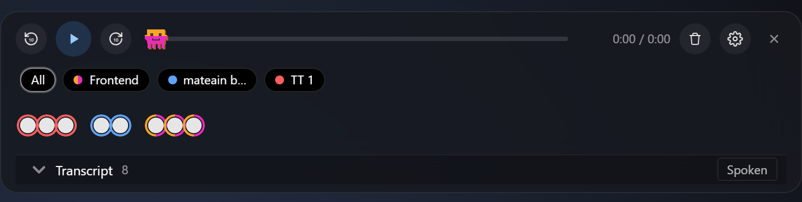
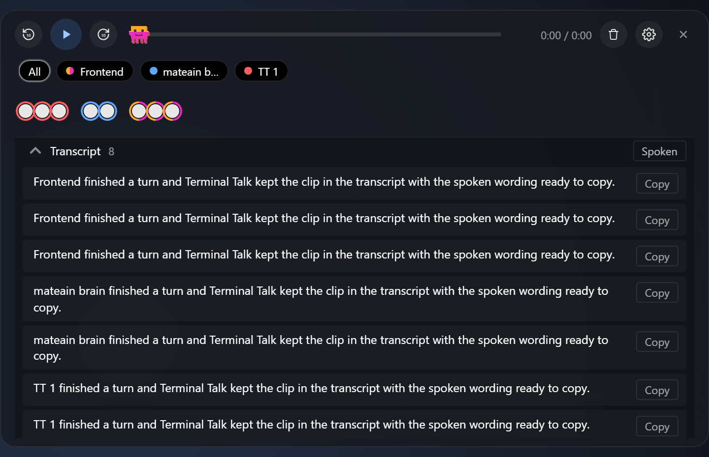
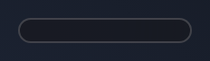
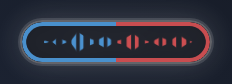
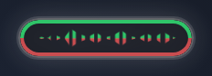
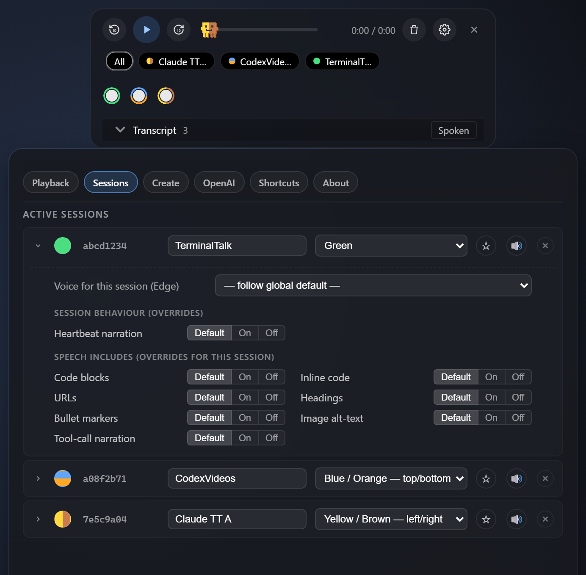
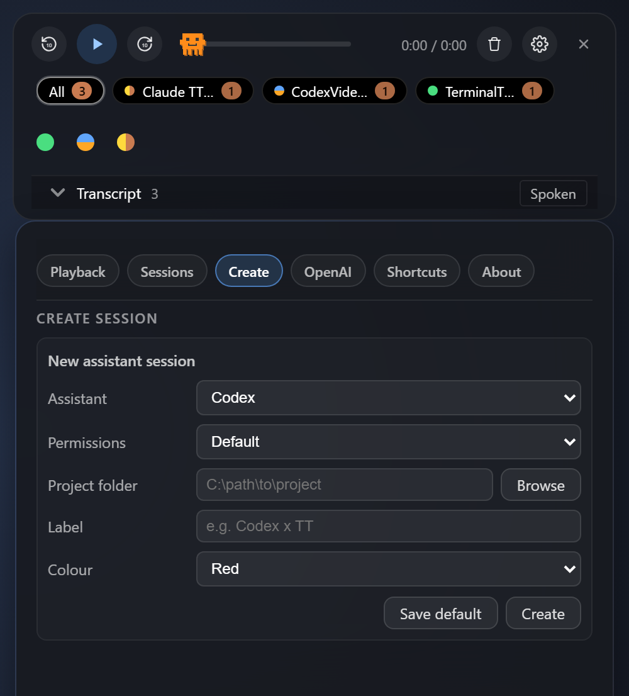
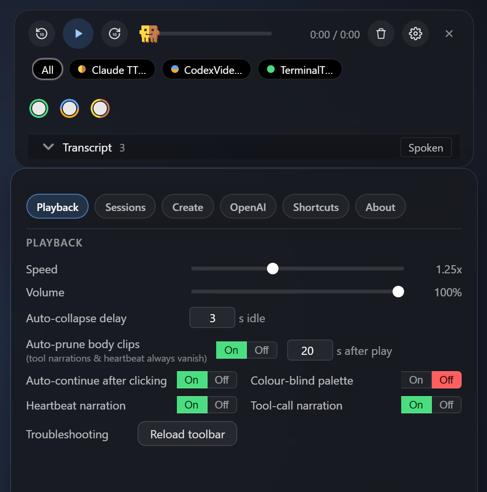

Your coding agents speak back, in order, through one toolbar.
Claude Code, Codex CLI, Claude Desktop Code, and Codex Desktop become a colour-coded audio workstream you can follow without reading every terminal.
Replies, tool progress, transcripts, focus, and session identity are built in. Optional highlight-to-speak is there when you want any selected text read aloud. Free by default. Offline wake-word detection. MIT licensed.
A session-aware audio layer for terminal and desktop coding agents
Voice input tools remove typing. Terminal Talk removes the other drag: watching every assistant window just to know what happened next.
Voice inputYour speech becomes text in any app
Dictation keeps your hands moving by getting prompts, notes, and replies onto the screen faster.
+
Terminal TalkAgent text becomes a tracked spoken workflow
Claude and Codex responses, tool narration, and session updates come back as colour-coded clips with focus, transcripts, and queue control.
🔊
Streaming auto-speak
Claude Code streams through hooks and transcript watching. Codex CLI uses native hooks plus rollout logs. Both become spoken clips in the same queue, with tool narration and heartbeat clips handled separately from body audio.
👂
"Hey jarvis" read-anything
Highlight text in any app — browser, PDF, VS Code, Slack — say the wake word or press Ctrl+Shift+S, hear it read. Runs offline on CPU.
🎨
24-palette session identity
Each session gets a solid or split colour identity, editable label, optional voice, focus priority, mute state, heartbeat override, and speech-includes policy. The same registry drives the toolbar, terminals, and desktop sync metadata.
🖥️
Desktop app identity sync
Claude Desktop Code and Codex Desktop sessions can be matched to Terminal Talk's registry so their persistent chats keep a visible TT label/colour in the local title surface, with sync controls in Settings.
📡
Collapsed waveform signal
The toolbar shrinks to a short click-through waveform. When audio plays, the line animation and pulsing border use the speaking session's solid, top/bottom, or left/right palette, so it stays readable even when collapsed.
🧭
Tabbed control panel
Playback, Sessions, Create, OpenAI, Shortcuts, and About are separate pages. Launch new assistant sessions, mark used colours, manage desktop sync, and tune per-session speech without one long settings scrollbar.
🔒
Free + private by default
Uses Microsoft Edge's neural voices with no API key. Wake-word detection runs offline on CPU. Optional OpenAI TTS fallback is explicit, encrypted, and off unless you choose it.
Current UI
The toolbar and settings bar carry the same session identity
These screenshots are generated from the live Electron toolbar mirror, so the docs show playback states, transcript review, tabbed settings, session controls, and collapsed signal states.
1 / 6

Queue identity
Active conversations stay visible without clutter
The top strip is only for sessions that are active or still have clips waiting. Grouped dots show queued, heard, and speaking clips with the same palette identity used everywhere else.

Transcript
Inspect what was actually spoken
Open the transcript, filter by session, copy a spoken row, or flip back to the original text. The toolbar keeps audio review close without dragging you out of the terminal.



Collapsed signal
The tiny state still tells you who is speaking
The letterbox stays short and click-through. When audio plays, the waveform grows while the border breathes back, preserving solid, left/right, and top/bottom palette splits.

Session controls
One row controls identity, focus, voice, and sync
Give each assistant a label, palette, voice, mute state, focus priority, heartbeat override, and speech-includes rule. Desktop sync status lives next to the session it belongs to.

Create
Launch assistants with identity already chosen
Pick Codex, Claude Code, or Claude Desktop Code, choose the project folder, label, palette, and permissions mode, then create a session that Terminal Talk can recognise.

Tabbed settings
The settings panel is split by job, not one long scroll
Playback, Sessions, Create, OpenAI, Shortcuts, and About each get a focused page. The controls are still deep, but the navigation stays compact.
See it in action
Terminal Talk in motion
The videos show the existing workflow cuts. The screenshots above are the current UI reference; updated videos are next.
Command-center hero advert
A polished mascot-led overview of Terminal Talk as a hands-free command center for Claude Code and Codex.
Install Python 3.10+ and Node.js 18+ if you don't already have them.
Clone the repo and run install.ps1 — installs deps, pre-downloads the wake-word model, adds Desktop/Start Menu shortcuts, and asks which hooks you want registered.
Open Claude Code, Codex CLI, Claude Desktop Code, or Codex Desktop. Assistant replies feed the same Terminal Talk queue where supported. Say "hey jarvis" over highlighted text to read it from any app.
PS> git clone https://github.com/benfrancisburns-creator/terminal-talk
PS> cd terminal-talk
PS> .\install.ps1
Windows 10/11 · Python 3.10+ · Node 18+ · Microphone
Mac and Linux ports are on the roadmap (no ETA yet — PRs welcome). Uninstall with .\uninstall.ps1 — reverses everything.
Privacy
What leaves your machine
One outbound call at runtime, only when you trigger it. No telemetry, no analytics, no background traffic.
What goes out — only when you ask
TTS text → Microsoft, to Edge's neural voice endpoint — the same one Edge browser's "Read Aloud" uses. Sent on every reply you hear and every "hey jarvis" highlight. Free, no API key, governed by Microsoft's consumer service terms.
What never happens
No audio is uploaded; wake-word runs offline on your CPU
No usage telemetry or analytics of any kind
No background network calls when idle
No account, no sign-up, no email required
One-off on install: install.ps1 downloads the ~30 MB wake-word model from HuggingFace, then runs offline forever after. Optional paid swap: configure the OpenAI TTS fallback if you want API terms with no-training guarantees instead of Microsoft's consumer ones.
FAQ
Likely questions
Is it really free, with no sign-up?
Yes. It uses Microsoft Edge's built-in neural voice endpoint (the same one Edge browser uses for "Read Aloud" — no API key required) and openWakeWord for offline wake-word detection. An OpenAI TTS fallback is optional if you'd rather pay for premium voices.
Why Windows-only at launch?
The toolbar and hooks rely on PowerShell + Windows-specific keybindings. Mac and Linux ports are on the roadmap (no ETA yet — the architecture is ready for them but the platform-specific glue isn't written). If you can help with a port, PRs are welcome.
Can I change the wake word from "hey jarvis"?
Yes — the wake model is a drop-in swap from the openWakeWord project. Documented in the README. You can also disable the wake word entirely and just use Ctrl+Shift+S.
Which coding agents does it support?
Claude Code and OpenAI Codex CLI are built in. Claude uses hooks for streaming, smart tool-call narration and permission alerts. Codex uses native hooks plus local ~/.codex/sessions rollout logs for commentary/final messages, shell and patch progress clips, and heartbeat working-state detection. Claude Desktop Code and Codex Desktop can also be matched into the same Terminal Talk registry where their local session metadata is exposed. The "hey jarvis / highlight and speak" path works with any app.
How do I uninstall?
Run .\uninstall.ps1. It reverses every change, restores your Claude Code settings from the backup created at install time, and removes Startup, Start Menu and Desktop shortcuts.
How do I reopen it after closing or killing it?
The toolbar X just hides the window; Ctrl+Shift+A, the tray icon, or Start Menu › Terminal Talk brings it back. If you fully quit or kill it in Task Manager, use the Desktop or Start Menu shortcut.
What's with the coloured dots?
Each tracked assistant session gets a unique solid or split palette marker on the toolbar. Claude Code can show a matching statusline glyph; Codex CLI can show a matching Terminal Talk terminal title; desktop sessions can sync local chat titles where the desktop app exposes enough metadata. You can also give each session its own voice, focus priority, mute state, heartbeat override, and speech rules.